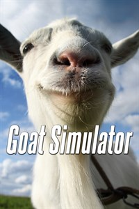
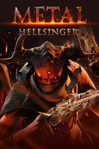
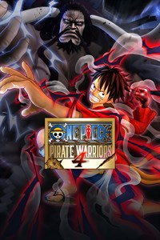

SINGLE PLAYER
-

Jogo de tiro em primeira pessoa desenvolvida pela id Software. A série, que se passa em um universo distópico apocalíptico, gira em torno de um fuzileiro espacial sem nome que trabalha para a UAC (Union Aerospace Corporation), lutando contra legiões de demônios e morto-vivos a fim de sobreviver e, posteriormente, na história, salvar a humanidade.
Marcadores populares para este produto: AÇÃO - FPS - VIOLÊNCIA DETALHADA
-

Goat Simulator é o que há de mais recente em tecnologia de simulação de cabras, levando a próxima geração de simulação de cabras até VOCÊ. Você não precisa mais fantasiar ser uma cabra, pois seus sonhos finalmente se tornaram realidade! WASD para fazer história. Quanto ao jogo em si, Goat Simulator se resume a causar o máximo de estrago que puder sendo uma cabra.
Marcadores populares para este produto: SIMULAÇÃO - ENGRAÇADO - COMÉDIA - MUNDO ABERTO
-

Mate demônios com metal e vingança em uma jornada infernal pelos oito infernos. Faça-os sentir medo da batida. Metal: Hellsinger um jogo de tiro de primeira pessoa cheio de demônios, armas da hora, e música de metal pesado.
Marcadores populares para este produto: ATMOSFÉRICO - RITMICO - UM JOGADOR - AÇÃO - TIRO
-

ONE PIECE: PIRATE WARRIORS 4 é a evolução mais recente da ação dos PIRATE WARRIORS! Baseado no conceito de “experimentar um verdadeiro campo de batalha do ONE PIECE”, em meio à ação e ataques, os edifícios desabarão e lançarão fumaça e poeira, colocando você no mundo do ONE PIECE! A introdução de novos elementos que não poderiam ser alcançados nas entradas anteriores agora conseguiu uma marca ainda mais emocionante da ação do PIRATE WARRIORS!
Marcadores populares para este produto: HACK-AND-SLASH - ANIME - PORRADARIA - PIRATAS
-

Do estúdio independente que criou Contrast, We Happy Few é um jogo de ação e aventura, retrofuturista, movido à drogas, em uma Inglaterra alternativa dos anos 60. Esconda-se, lute e se adapte a esse mundo ilusório e obcecado por Joy.
Marcadores populares para este produto: AVENTURA - MUNDO ABERTO - AÇÃO - SOBREVIVÊNCIA